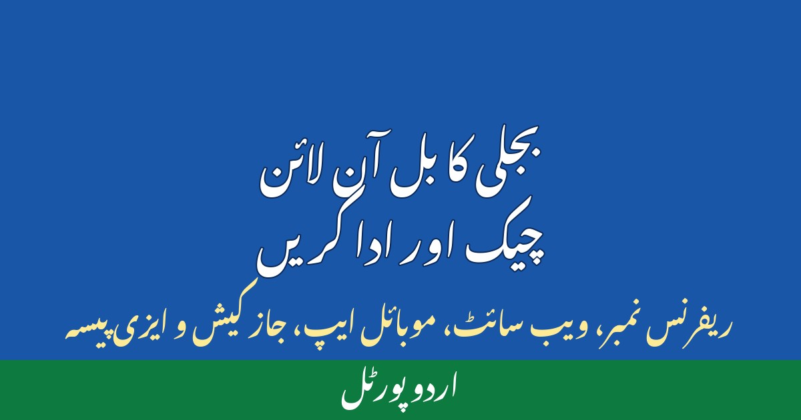

بجلی کا بل آن لائن چیک اور ادا کرنے کا طریقہ

ہر مہینے بجلی کا بل آتا ہے، اور اکثر لوگ اسے ادا کرنے کے لیے دفتر یا دکان پر لائن میں لگتے ہیں۔ کبھی بل گم ہو جاتا ہے، کبھی آخری تاریخ گزر جاتی ہے اور جرمانہ لگ جاتا ہے۔ اچھی خبر یہ ہے کہ اب پاکستان میں بجلی کا بل گھر بیٹھے موبائل سے چیک بھی کیا جا سکتا ہے اور ادا بھی۔ اس مضمون میں بل چیک کرنے، آن لائن ادا کرنے، بل سمجھنے اور غلط بل کی شکایت کا مکمل طریقہ آسان اردو میں بیان کیا گیا ہے۔
1۔ بل چیک کرنے کے لیے کیا چاہیے؟ ریفرنس نمبر
بجلی کا بل آن لائن چیک کرنے کے لیے سب سے اہم چیز آپ کا ریفرنس نمبر ہے۔ یہ 14 ہندسوں کا نمبر ہوتا ہے جو ہر بل پر چھپا ہوتا ہے، عام طور پر بل کے اوپری حصے میں "ریفرنس نمبر" یا "Reference No" لکھا ہوتا ہے۔ یہ نمبر آپ کے میٹر اور کنکشن کی شناخت ہے — ایک بار اسے موبائل میں محفوظ کر لیں تو ہر مہینے کاغذی بل کی ضرورت نہیں رہے گی۔ ہر کنکشن کا نمبر الگ ہوتا ہے، اس لیے کسی اور کا نمبر کام نہیں آئے گا۔ پرانا بل نہ ہو تو یہ نمبر اپنی بجلی کمپنی کے دفتر سے حاصل کریں۔
2۔ اپنی بجلی کمپنی پہچانیں
پاکستان میں بجلی کی تقسیم مختلف کمپنیوں کے ذریعے ہوتی ہے، اور ہر کمپنی کی اپنی ویب سائٹ ہے۔ لاہور کے لیے لیسکو، اسلام آباد و راولپنڈی کے لیے آئیسکو، کراچی کے لیے کے الیکٹرک، ملتان کے لیے میپکو، پشاور کے لیے پیسکو، حیدرآباد کے لیے حیسکو، کوئٹہ کے لیے کیسکو، فیصل آباد کے لیے فیسکو، گوجرانوالہ کے لیے گیپکو اور سکھر کے لیے سیپکو ذمہ دار ہیں۔ بل چیک کرنے سے پہلے اپنے بل پر کمپنی کا نام دیکھ لیں، کیونکہ غلط کمپنی کی ویب سائٹ پر آپ کا بل نہیں کھلے گا۔
3۔ ویب سائٹ سے بل چیک کرنے کا طریقہ — قدم بہ قدم
ویب سائٹ سے بل چیک کرنا سب سے آسان طریقہ ہے، اور اس کے لیے کسی ایپ کی ضرورت نہیں:
- اپنی بجلی کمپنی کی سرکاری ویب سائٹ کھولیں
- ویب سائٹ پر "بل چیک کریں"، "ڈپلیکیٹ بل" یا "Bill Inquiry" کا بٹن تلاش کریں
- اپنا 14 ہندسوں کا ریفرنس نمبر درست درج کریں — ایک ہندسہ بھی غلط ہو تو بل نہیں کھلے گا
- جمع کرائیں یا سرچ کا بٹن دبائیں — آپ کا موجودہ بل اسکرین پر آ جائے گا
- بل کو ڈاؤن لوڈ یا پرنٹ کر لیں، تاکہ ریکارڈ محفوظ رہے
اگر بل نہ کھلے تو پہلے ریفرنس نمبر اور کمپنی کا نام دوبارہ چیک کریں، پھر چند گھنٹے بعد دوبارہ کوشش کریں — مہینے کے شروع میں ویب سائٹ پر رش سے کبھی کبھار تاخیر ہو جاتی ہے۔
4۔ موبائل ایپ سے بل چیک کریں
اگر آپ بار بار بل چیک کرتے ہیں تو موبائل ایپ زیادہ سہولت دیتی ہے۔ کئی بجلی کمپنیوں کی اپنی سرکاری ایپس ہیں، اور بینکوں کی ایپس اور موبائل بٹووں میں بھی بل دیکھنے کی سہولت ہوتی ہے۔ ایپ میں ایک بار ریفرنس نمبر محفوظ کر لیں تو ہر مہینے بل خود نظر آ جاتا ہے، اور بعض ایپس آخری تاریخ سے پہلے یاد دہانی بھی بھیجتی ہیں۔ ایپ انسٹال کرنے سے پہلے اس کا نام اور بنانے والی کمپنی ضرور چیک کریں، تاکہ جعلی ایپ سے بچا جا سکے۔
5۔ بل آن لائن ادا کرنے کے طریقے
بل چیک کرنے کے بعد اسے ادا کرنے کے کئی آسان طریقے ہیں:
- موبائل بٹوے: جاز کیش اور ایزی پیسہ کی ایپ میں "بل ادائیگی" کھولیں، کمپنی منتخب کریں، ریفرنس نمبر درج کریں اور ادائیگی کریں — رسید فوراً موبائل پر آ جاتی ہے
- بینک ایپ: اپنی بینک ایپ کے بل ادائیگی سیکشن سے اسی طرح ادائیگی کریں
- ڈیبٹ یا کریڈٹ کارڈ: بجلی کمپنی کی ویب سائٹ یا بینک ایپ کے ذریعے کارڈ سے ادائیگی بھی ممکن ہے
- اے ٹی ایم: بینک کے اے ٹی ایم سے بھی بجلی کا بل ادا کیا جا سکتا ہے
ادائیگی کے بعد ملنے والی رسید یا ٹرانزیکشن نمبر ضرور محفوظ کریں — اسکرین شاٹ لے لیں۔ اگر کبھی ادائیگی کا ریکارڈ نہ ملے تو یہی رسید آپ کا ثبوت ہوگی۔ آخری تاریخ سے ایک دو دن پہلے ادائیگی کرنا بہتر ہے، تاکہ سسٹم کی تاخیر سے جرمانے سے بچا جا سکے۔
6۔ بل سمجھیں — رقم کیوں زیادہ آئی؟
بل کو سمجھنے کے لیے چند چیزیں دیکھیں:
- استعمال شدہ یونٹس: اس مہینے کتنے یونٹس استعمال ہوئے — پچھلے مہینے سے موازنہ کریں
- سلیب: زیادہ استعمال پر فی یونٹ قیمت بڑھ جاتی ہے، اس لیے بل اچانک بڑھ سکتا ہے
- ٹیکس اور سرچارج: یہ اصل بجلی کی قیمت سے الگ بل میں شامل ہوتے ہیں
- بقایا جات: اگر پچھلا بل ادا نہ ہوا ہو تو اس کی رقم بھی نئے بل میں شامل ہو جاتی ہے
- میٹر ریڈنگ: بل پر لکھی ریڈنگ کا اپنے میٹر سے موازنہ کریں — غلط ریڈنگ غلط بل کی عام وجہ ہے
اگر یونٹس اچانک بہت بڑھ گئے ہوں تو گھر میں زیادہ بجلی استعمال کرنے والی چیزیں چیک کریں — اے سی، واٹر پمپ، ہیٹر یا خراب فریج اکثر وجہ بنتے ہیں۔ بجلی بچانے کے طریقوں کے لیے ہمارا مضمون "بجلی کا بل کم کرنے کے آزمودہ طریقے" بھی پڑھیں۔
7۔ غلط بل آئے تو شکایت کیسے کریں؟
اگر بل غلط لگے تو یہ اقدامات کریں:
- اپنے میٹر کی موجودہ ریڈنگ کی تصویر لے لیں، تاریخ کے ساتھ
- پچھلے تین مہینوں کے بل اور ادائیگی کی رسیدیں اکٹھی کریں
- اپنی بجلی کمپنی کی ہیلپ لائن پر شکایت درج کرائیں اور شکایت نمبر محفوظ کریں
- کمپنی کے قریبی دفتر میں تحریری درخواست بھی دی جا سکتی ہے — درخواست کی کاپی اپنے پاس رکھیں
- اگلے بل میں اصلاح چیک کریں، نہ ہو تو شکایت نمبر کے حوالے سے دوبارہ رابطہ کریں
شکایت کرتے وقت شائستہ رہیں اور تمام ثبوت ساتھ رکھیں — ثبوت کے بغیر شکایت کمزور پڑ جاتی ہے۔
8۔ عام غلطیاں جن سے بچیں
- ریفرنس نمبر غلط درج کرنا — ہر بار نمبر دوبارہ چیک کریں
- آخری تاریخ تک انتظار کرنا — سسٹم کی خرابی یا انٹرنیٹ کا مسئلہ جرمانے کا سبب بن سکتا ہے
- رسید ضائع کرنا — ادائیگی کا ثبوت ہمیشہ محفوظ رکھیں
- غیر سرکاری ویب سائٹ یا جعلی لنک سے بل ادا کرنا — صرف کمپنی کی سرکاری ویب سائٹ، بینک ایپ یا معروف موبائل بٹوہ استعمال کریں
- کسی کو اپنا ریفرنس نمبر بلا وجہ نہ دیں
بجلی کا بل آن لائن چیک کرنا اور ادا کرنا مشکل نہیں — صرف ریفرنس نمبر چاہیے، سرکاری ویب سائٹ یا ایپ چاہیے، اور ادائیگی کا ثبوت محفوظ رکھنا ہے۔ آج ہی اپنا بل آن لائن چیک کریں۔